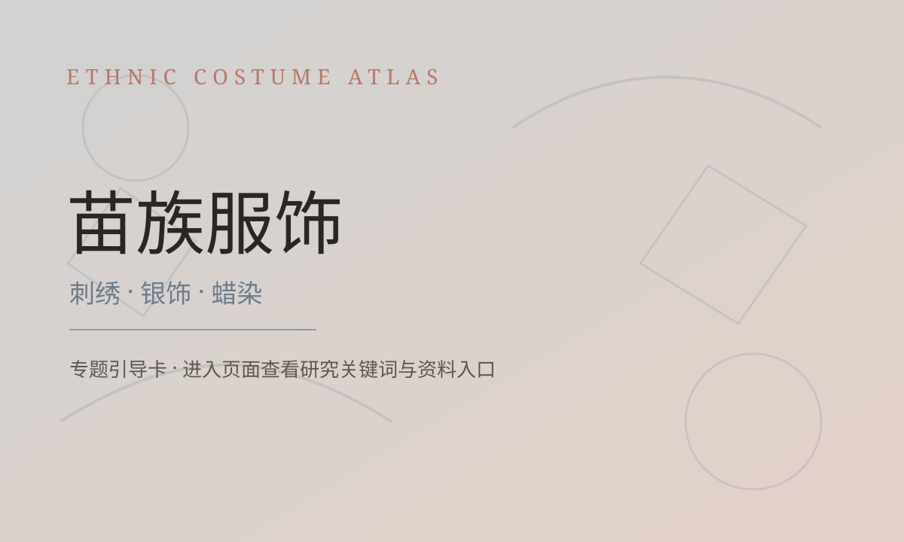

SOUTHWEST · EMBROIDERY & BATIK
苗族服饰
苗族服饰在不同地区和支系之间差异显著。可从上衣、百褶裙、围腰、头帕、银饰、刺绣、织锦和蜡染等方面建立地区化档案。应标注具体县域、支系和节庆场景。
研究关键词：刺绣、银饰、蜡染、织锦、百褶裙
研究提醒：不要将“苗族服饰”当作单一款式。
非遗传统工艺目录入口研究提醒：不要将“苗族服饰”当作单一款式。
以民族、地域、支系、生活环境和穿着场景为线索，研究中国各民族服饰的结构、材料、纹样、色彩、制作技艺与当代传承。服饰不是静止的“民族标签”，而是不断变化的生活实践；同一民族内部也可能因地区、支系、年龄、性别、节庆和日常场景呈现多样面貌。
专题轮换 · 民族服饰
苗族服饰具有丰富的地域与支系差异。研究时应结合具体地区的服装结构、刺绣、织锦、蜡染、银饰、节庆场景与传承人口述，避免将某一套舞台服装视为所有苗族社区的日常穿着。

苗族服饰在不同地区和支系之间差异显著。可从上衣、百褶裙、围腰、头帕、银饰、刺绣、织锦和蜡染等方面建立地区化档案。应标注具体县域、支系和节庆场景。

藏族服饰与高原气候、牧农生活、地域材料和礼仪习俗密切相关。研究需区分卫藏、康、安多等区域差异，关注藏袍、氆氇、邦典、帽饰、靴履及不同场合穿着。

维吾尔族服饰需结合新疆不同绿洲地区和生活场景研究。可关注艾德莱斯绸、花帽、袷袢、长袍、坎肩、刺绣及礼仪服饰。不同地区、年龄和场合的穿着不能混为一谈。
哈萨克族服饰与草原游牧生活、季节气候和畜牧材料有关。非遗项目资料提到兽皮、牲畜皮及布料制作，并记录缝制、刺绣和饰品加工等特点。
侗族服饰研究可关注侗布、蓝染、刺绣、头巾、银饰和节庆盛装。应具体记录黔、湘、桂不同区域的材料、结构和工艺差异。
彝族服饰在凉山、滇、黔等地存在多样地方形态。研究可关注羊毛织物、披毡、头帕、腰带、百褶裙、刺绣和不同地区的色彩组合。
布依族服饰研究可结合蓝染、蜡染、土布、刺绣和头巾等地方工艺，重点观察不同地区的服装结构、织物材料和日常使用方式。
黎族传统纺染织绣技艺是研究海南地方织物、纺织组织、纹样和服饰的重要入口。可从筒裙、龙被、纺染织绣工序和不同方言支系的纹样特点展开。
蒙古族服饰研究可从袍服、腰带、靴、帽、皮毛材料和季节穿着入手，区分不同地区、年龄、性别、礼仪和日常场景。
朝鲜族服饰研究可关注上衣、裙装、裤装、飘带、色彩组合及礼仪场景。需结合具体年代和生活场景，区分日常服饰与节庆、礼仪服饰。
畲族服饰可从不同地区的凤凰装、彩带、头饰、刺绣和礼仪场景切入。研究应核对当地称谓、使用场合及传承人的具体解释。
赫哲族鱼皮制作技艺与江河渔猎生活及鱼皮材料加工有关。研究可记录鱼皮选材、鞣制、裁剪、缝制、装饰和服饰使用场景。
| 档案字段 | 记录内容 | 研究价值 |
|---|---|---|
| 民族与地区 | 民族名称、具体省区县、村寨、支系或地方称谓。 | 避免把区域差异抹平。 |
| 服装结构 | 上衣、下装、外衣、围腰、头饰、鞋履、穿着层次。 | 可用于服装结构分析与版型研究。 |
| 材料与工艺 | 棉、麻、丝、毛、皮革；织造、染色、刺绣、缀饰。 | 理解地方生产体系和工艺知识。 |
| 纹样与色彩 | 当地名称、图案构成、色彩材料、使用语境。 | 为纹样数据库与设计转译建立依据。 |
| 使用场景 | 日常、劳动、婚礼、节庆、礼仪、舞台展示。 | 区分生活服饰与表演服饰。 |
| 来源与授权 | 馆藏编号、摄影者、传承人、出版物、授权条件。 | 保证研究可追溯并尊重知识产权。 |
民族服饰不是可以随意拆取的装饰素材。记录图案、服装名称和仪式用途时，应尊重当地社区和传承人的知识解释；涉及宗教、礼仪或特定身份服饰时，不把其简化成时尚符号。商业设计转化应明确来源、征得必要授权，并考虑与相关社区合作和合理回馈。
本页的民族条目是初始索引，不等于56个民族的完整服饰档案。后续将按地区、支系、具体服装、工艺和实物证据逐项扩展。